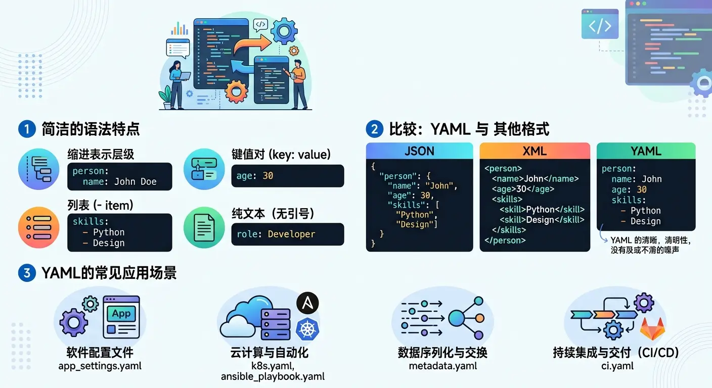

YAML Full NameYAML Ain't Markup Language(a recursive acronym), is a human-readable data serialization format.
YAML is often used for configuration files, data exchange, and various scenarios where data needs to be stored in a structured way.
YAML's syntax is similar to other high-level languages, and can easily express lists, hash tables, scalars, and other data forms.
It uses whitespace indentation and relies heavily on appearance, making it especially suitable for expressing or editing data structures, various configuration files, dumping debug content, and file outlines.
The file extension for YAML configuration files is.yml, such as:runoob.yml 。

Features and Advantages of YAML
YAML's design goals include strong readability, concise syntax, close to natural language writing habits, and almost no extra symbols needed.
Compared to XML and JSON, YAML reduces a lot of brackets and quotes, making writing easier.
It supports complex data structures, can express lists, dictionaries, nested structures, and even supports advanced features like references and anchors.
Almost all mainstream programming languages have libraries for parsing YAML, and the ecosystem is very mature.
Comparison of YAML with JSON and XML
The three formats have their own focuses; the table below compares them across multiple dimensions:
| Feature | YAML | JSON | XML |
|---|---|---|---|
| Readability | 高 | 中 | 低 |
| Comment Support | Supported | Not supported | Supported |
| Syntax Complexity | 低 | 中 | 高 |
| Common Uses | Configuration files | Data exchange / API | Document / Data exchange |

Common Use Cases for YAML
YAML is almost ubiquitous in the modern development stack; here are the most common scenarios:
Application configuration files, such as Spring Boot'sapplication.yml。
Container orchestration tools, such as deployment description files for Docker Compose and Kubernetes.
CI/CD pipeline configuration, such as workflow definitions for GitHub Actions, GitLab CI, and CircleCI.
Front Matter for static site generators, such as page metadata for Jekyll and Hugo.
Basic Syntax Rules
Master the most basic writing rules of YAML, including indentation, comments, file structure, etc.
Indentation Rules
YAML usesspacesfor indentation to represent hierarchy,cannot use the Tab key。
Elements at the same level must maintain the same indentation amount; it is usually recommended to use 2 spaces as the indentation unit.
person: name: 张三 age: 25
Basic Syntax
The following are the core syntax rules of YAML that you need to remember:
- Case sensitive
- Use indentation to represent hierarchy
- Indentation does not allow tabs, only spaces
- The number of spaces for indentation is not important, as long as elements at the same level are left-aligned
- #Indicates a comment
- :A space must be added after the symbol
Case Sensitivity
Key names, strings, etc. in YAML are case-sensitive.
Name 和 namewill be treated as two different keys; you need to pay attention to consistency when writing.
Comment Syntax
Use#Content at the beginning is a comment; comments can occupy a whole line or be placed after content.
# 这是一行注释 name: 张三 # 这也是注释
File Extensions
YAML files usually use.yaml 或 .ymlas the extension; there is no essential difference between the two, depending on project conventions.
Document Separators
---Used to mark the start of a new document, especially important in multi-document files.
...Used to mark the end of a document, and is an optional marker.
--- doc: 第一个文档 --- doc: 第二个文档
Basic Data Types
YAML supports basic data types such as strings, numbers, booleans, and null values; each type has a specific writing style.
Data Type Overview
YAML supports the following data types:
- Objects: a collection of key-value pairs, also known as mapping / hashes / dictionary
- Arrays: a set of values arranged in order, also known as sequence / list
- Scalars: single, indivisible values
Scalar
Scalars are the most basic data units in YAML and are divided into the following types:
Strings
Strings can be written without quotes, or wrapped in double quotes or single quotes.
Double quotes support escape characters (such as\n), while single quotes do not support escaping.
name: 张三 # 不加引号 name: "张三" # 双引号，支持转义字符 name: '张三' # 单引号，不支持转义
Numbers
YAML automatically recognizes integers and floating-point numbers, without the need to declare types.
age: 25 # 整数 price: 19.99 # 浮点数
Booleans
Booleans usetrue 和 falseto represent.
is_active: true is_deleted: false
Null
Null can be represented withnull、~or by writing nothing to indicate it.
value: null value: ~ value: # 什么都不写也表示 null
Comprehensive Scalar Example
The following example shows how to use all scalar types, including booleans, floats, integers, null, strings, dates, and times:
boolean:
- TRUE # true,True 都可以
- FALSE # false,False 都可以
float:
- 3.14
- 6.8523015e+5 # 可以使用科学计数法
int:
- 123
- 0b1010_0111_0100_1010_1110 # 二进制表示
null:
nodeName: 'node'
parent: ~ # 使用 ~ 表示 null
string:
- 哈哈
- 'Hello world' # 可以使用双引号或者单引号包裹特殊字符
- newline
newline2 # 字符串可以拆成多行，每一行会被转化成一个空格
date:
- 2018-02-17 # 日期必须使用 ISO 8601 格式，即 yyyy-MM-dd
datetime:
- 2018-02-17T15:02:31+08:00 # 时间使用 ISO 8601 格式，时间和日期之间使用 T 连接，最后使用 + 代表时区
Dates and times must use ISO 8601 format. The date format isyyyy-MM-dd, the time format isyyyy-MM-ddTHH:mm:ss+timezone, in the middleTto connect.
Multiline Strings
YAML provides two ways to write multiline strings, each suitable for different scenarios.
Folded Style (>)
Use the>symbol folds multiline text into one line; newline characters are replaced with spaces.
description: > 这是第一行 这是第二行 这是第三行
The above writing is equivalent to:"This is the first line This is the second line This is the third line\n"
Literal Style (|)
Use the|symbol preserves the original newlines, suitable for writing multiline text (such as script content).
script: | echo "第一行" echo "第二行" echo "第三行"
Comparison of | and >
Below, using the same contentFoo\nBarto compare the differences between the two styles:
this: | Foo Bar that: > Foo Bar
Converted to JavaScript code as follows:
{ this: 'Foo\nBar\n', that: 'Foo Bar\n' }
It can be seen that|preserves newlines, resulting inFoo\nBar\n; while>folds newlines into spaces, resulting inFoo Bar\n。
Choosing>or|depends on your needs: if you need to combine multiline content into one paragraph, use>; if you need to preserve the original newline format (such as scripts, poetry), use|。
Composite Data Structures
YAML supports two composite structures: mappings and sequences. They can be freely nested to express arbitrarily complex data relationships.
Mapping / Dictionary
A mapping is a collection of key-value pairs and is the most commonly used data structure in YAML.
Basic key-value pair syntax
name: 张三 age: 25 city: 北京
Nested mapping
Through indentation, you can nest another mapping inside a mapping, forming a hierarchical structure.
person:
name: 张三
address:
city: 北京
zipcode: "100000"
Flow-style mapping syntax
You can also use thekey:{key1: value1, key2: value2, ...}flow-style syntax.
key: {child-key: value, child-key2: value2}
Complex Key
Use a question mark followed by a space to represent a complex key, paired with a colon and space to represent a value:
?
- complexkey1
- complexkey2
:
- complexvalue1
- complexvalue2
This means the object's property is an array[complexkey1, complexkey2], and the corresponding value is also an array[complexvalue1, complexvalue2]。
Sequence / List
prefix notation-to store ordered data collections.
Basic list syntax
fruits: - 苹果 - 香蕉 - 橙子
Nested lists
matrix: - [1, 2, 3] - [4, 5, 6] - [7, 8, 9]
Multidimensional arrays
YAML supports multidimensional arrays, which can be represented inline:
key: [value1, value2, ...]
When a sub-member of the data structure is an array, you can indent one space below that item:
- - A - B - C
Complex example with array elements being objects
A common real-world scenario: each element in the array is an object composed of multiple properties:
companies:
-
id: 1
name: company1
price: 200W
-
id: 2
name: company2
price: 500W
This meanscompaniesthe property is an array, and each array element is composed ofid、name、pricethree properties.
Arrays can also be represented in flow style:
companies: [{id: 1,name: company1,price: 200W},{id: 2,name: company2,price: 500W}]
Mixing Mappings and Sequences
Mappings and sequences can be flexibly combined to express complex data structures.
students:
- name: 张三
age: 20
subjects:
- 数学
- 英语
- name: 李四
age: 22
subjects:
- 物理
- 化学
In the above example,studentsis a sequence, each element is a mapping, and the mapping'ssubjectsis again a sequence. This kind of nested combination is the core of YAML's expressiveness.
Composite Structure Example
Arrays and objects can form composite structures. The following is an example that contains both a list and a mapping:
languages: - Ruby - Perl - Python websites: YAML: yaml.org Ruby: ruby-lang.org Python: python.org Perl: use.perl.org
After converting to JSON:
{
languages: [ 'Ruby', 'Perl', 'Python'],
websites: {
YAML: 'yaml.org',
Ruby: 'ruby-lang.org',
Python: 'python.org',
Perl: 'use.perl.org'
}
}
Flow Syntax
In addition to block-style notation, YAML also supports JSON-like flow notation, suitable for compact scenarios.
Flow Mapping
Use curly braces{}to wrap key-value pairs, separated by commas.
person: {name: 张三, age: 25, city: 北京}
Flow Sequence
Use square brackets[]to wrap elements, separated by commas.
fruits: [苹果, 香蕉, 橙子]
Comparison and Use Cases of Flow and Block Styles
| Style | Features | Applicable scenarios |
|---|---|---|
| Block | Better readability, clear hierarchy | Structurally complex data with deep nesting |
| Flow | More compact, expressed on a single line | Simple data, or small data embedded in block structures |
The two styles can also be mixed:
users:
- {name: 张三, age: 25}
- {name: 李四, age: 30}
Advanced Features
YAML provides advanced features such as anchors, references, and merge keys to help reduce duplicate content.
Anchors and References
Use&to define an anchor, and use*to reference the anchor, avoiding repeated writing of the same content.
default_settings: &defaults adapter: postgres host: localhost development: <<: *defaults database: dev_db test: <<: *defaults database: test_db
In the above example,&defaultsdefines an anchor,*defaultsreferences the content of that anchor,<<indicating merging into the current data.
The above configuration expands to:
defaults: adapter: postgres host: localhost development: database: myapp_development adapter: postgres host: localhost test: database: myapp_test adapter: postgres host: localhost
Anchor references in lists
Anchors can also be used in lists:
- &showell Steve - Clark - Brian - Oren - *showell
After converting to a JavaScript array:
[ 'Steve', 'Clark', 'Brian', 'Oren', 'Steve' ]
Merge Keys
<<Used to merge one mapping's content into the current mapping, often used in conjunction with anchors.
Merge key<<is a feature in the YAML 1.1 specification and is supported by most YAML parsers. It can make configuration files more concise, but note that it is not part of the JSON specification and will be expanded into actual content when converted to JSON.
Multiple Document Support
In a YAML file, you can use---to separate and store multiple independent documents, commonly seen in Kubernetes configuration files.
--- kind: Pod metadata: name: pod-1 --- kind: Pod metadata: name: pod-2
Tags and Type Conversion
YAML supports explicitly specifying data types through tags, using the!!prefix declaration.
explicit_string: !!str 123 explicit_int: !!int "123" explicit_float: !!float "3.14"
Common tags include!!str(string),!!int(integer),!!float(float),!!bool(boolean),!!null(null), etc.
Common Errors and Caveats
YAML is very sensitive to formatting. Below are the most common error types and how to avoid them.
Parsing Failures Caused by Indentation Errors
YAML is extremely sensitive to indentation. Indentation at the same level must be exactly consistent, otherwise it will cause parsing errors.
# 错误示例：缩进不一致 person: name: 张三 age: 25 # 缩进多了一个空格，会报错
Mixing Tabs and Spaces
The YAML specification clearly states thattabs are not allowed for indentation, and spaces must be used consistently, otherwise most parsers will report an error.
It is recommended to enable the "Convert Tab to Spaces" setting in the editor to avoid accidentally mixing in Tab characters. Most modern editors support.yaml 和 .ymlautomatically enabling this setting for files.
Escaping Special Characters
When a string contains:、#、{、}、[、]and other special characters, it is recommended to wrap the string in quotes to avoid being misjudged by the parser.
title: "标题: 副标题" # 冒号需要用引号包裹 tag: "#重要" # 井号需要用引号包裹，否则会被当作注释
When to Quote Strings
In the following cases, it is recommended to explicitly add quotes to avoid incorrect type inference by the YAML parser:
| Scenario | Example | Description |
|---|---|---|
| String starts with a digit | "100000" | Without quotes, it will be parsed as a number |
| Easily confused boolean words | "true"、"false"、"yes"、"no" | Without quotes, it will be parsed as a boolean |
| Null words | "null"、"~" | Without quotes, it will be parsed as null |
| Contains special symbols | "Title: Subtitle" | Colons, hashes, etc. will be misjudged as syntax markers |
Practical Applications
Understand the use of YAML in real projects through complete examples in actual scenarios.
Writing a Simple Configuration File
The following is a typical application configuration file, showing the common structure of YAML in real projects:
# 应用基本配置 app: name: MyApplication version: 1.0.0 debug: false # 数据库连接配置 database: host: localhost port: 5432 username: admin password: "secret" # 日志配置 logging: level: info file: /var/log/app.log
YAML in Docker Compose
Docker Compose uses YAML to define the service orchestration of multi-container applications:
version: "3"
services:
web:
image: nginx:latest
ports:
- "80:80"
db:
image: mysql:8.0
environment:
MYSQL_ROOT_PASSWORD: example
YAML in Kubernetes
Kubernetes uses YAML to define various resource objects. The following is an example of a Pod definition:
apiVersion: v1
kind: Pod
metadata:
name: nginx-pod
spec:
containers:
- name: nginx
image: nginx:latest
ports:
- containerPort: 80
YAML in GitHub Actions
GitHub Actions uses YAML to define CI/CD workflows:
name: CI
on: [push, pull_request]
jobs:
build:
runs-on: ubuntu-latest
steps:
- uses: actions/checkout@v3
- name: Run tests
run: npm test
Tools and Validation
Recommend some practical YAML tools and resources to help you write and validate YAML files more efficiently.
Online YAML Validators
YAML Lint is the most commonly used online validation tool. You can search "yamllint online" to find available online validation websites.
Various IDEs also have built-in YAML syntax checking, providing real-time error prompts while writing.
YAML Parsing Libraries for Common Programming Languages
| Language | Common libraries | Features |
|---|---|---|
| Python | PyYAML、ruamel.yaml | PyYAML is the most popular, ruamel.yaml supports YAML 1.2 |
| JavaScript / Node.js | js-yaml | Works in both browser and Node.js environments |
| Java | SnakeYAML | The YAML parsing library used by default in Spring Boot |
| Go | gopkg.in/yaml.v3 | The most commonly used YAML library in the Go ecosystem |
| Ruby | Psych | Built into the standard library, no additional installation required |
Recommended Editor Plugins
| Editor | Recommended plugin | Features |
|---|---|---|
| VSCode | Red Hat's YAML plugin | Syntax highlighting, format validation, Schema validation |
| IntelliJ IDEA / PyCharm | Built-in support | No additional installation required, works out of the box |
| Sublime Text | YAML-related plugins | Enhances syntax highlighting and formatting |
Click to Share Notes
<p style="font-size:14px;">The note should be an extension of the content of this article!</p><br> <p style="font-size:12px;"><a href="../tougao.html" target="_blank">To submit an article, click here</a></p> <p style="font-size:14px;"><a href="./runoob-user-test-intro.html" target="_blank">How to obtain the registration invitation code</a></p> <h3 class="text-muted"><i class="fa fa-info-circle" aria-hidden="true"></i> You must <a href=".." class="runoob-pop">login</a> before sharing notes!</h3> <p><a href="./runoob-user-test-intro.html" target="_blank">How to obtain the registration invitation code</a></p>